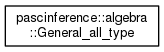
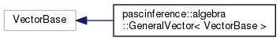

Statistical methods for causality inference on HPC
Main Page
Data Structures
Files
Other
Data Structures
Data Structure Index
Class Hierarchy
Data Fields
Class Hierarchy
Go to the textual class hierarchy


Generated on Fri Mar 11 2016 00:40:54 for PASC-Inference by
1.8.9.1
 1.8.9.1
1.8.9.1